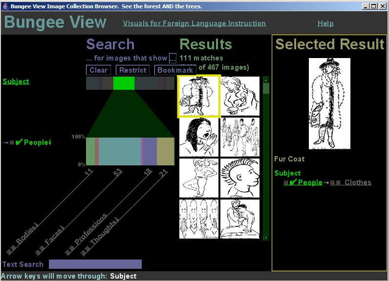

Bungee View is a visualization prototype developed at Carnegie Mellon University to support casual users gaining an understanding of an image collection as a whole, and in finding patterns in such collections. As a research experiment with the University of Pittsburgh, you can explore the Visuals for Foreign Language Instruction image collection hosted by the University Library System's Digital Research Library.
Since this novel way of exploring image collections is a research project, your usage will be recorded to help improve Bungee View. We will use your IP address to track your repeat visits, but will not attempt to identify you as a person. We also welcome feedback to (Mark Derthick).
Run Bungee View
Click to
as a Java Web Start application in a new window.*
Once it starts, click on any underlined text, or on any image or colored bar.
For more information, use the Help menu.
*
If your browser doesn't know how to open this link, it means you need to install Java 1.4 or later, which includes the Java Web Start plug-in.
If the new window is stuck at "Waiting for http://cityscape..." and you used Bungee View before February 2007, go to the Java control panel, find Temporary Internet Files, and click the Delete Files button. This is because cityscape is now a different computer.
Data-Mining with Bungee View

Bungee View lets you search, browse, and data-mine image collections. It shows an overview of the entire collection, in addition to the familiar result list and item details of other search interfaces.
Bar charts provide collection overviews
For each metadata category, vertical bars show the distribution of images in the collection that match your query. In the screenshot above, the query is for images of People. The row of bars labeled "People" shows the resulting distribution for various subcategories. Wide bars represent subcategories that appear in many images in the collections.
Motivation
Web search engines have attracted widespread demand for information retrieval from unstructured documents. The number of structured and semi-structured documents available on the Web is also huge, and collections of these are more amenable to data mining. Yet there has been no similar explosion of interest in this kind of exploration. Finding patterns in databases of political contributions, environmental data, or hospital and school performance would surely interest many citizens. The main research question for this project is how to support such exploration for users with little or no training in statistics or programming. In contrast to other data-mining systems, Bungee View focuses on learnability, responsiveness, robustness, and providing a satisfying user experience.
Bungee View version 11/2006, Copyright (C) 2006 Mark Derthick
Bungee View comes with ABSOLUTELY NO WARRANTY; This is free software,
and you are welcome to redistribute it under certain conditions; Choose
"About Bungee View" on the Help menu for details.